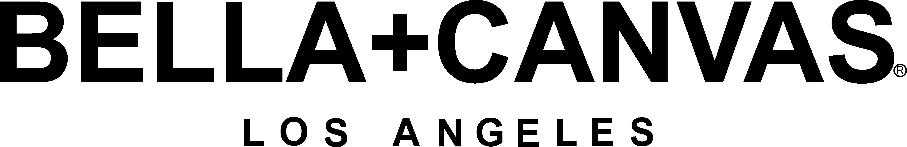

ArtToCloth is a collection of clothing made by me. It started as a hobby to make my
own unique cloths and now is the beginning of what I hope to be a clothing shop.
Everyone has their own unique style and what better way is there to put whatever is
in your brain onto clothing that is a 1-of-1. On here you will find a sample of
custom appereal that I have done so far.
When it comes to finding the best fabric for you there are tons of options out there. I
have taken the time and researched different brands to find the best quality cotton to
print on. There is an option for everyone whether you work at a resturant, want everyday
clothing, or a nice thick sweater.